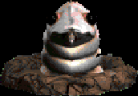

|

|
A younger form of its mature relatives, the larva is a bit weaker than other groundworms. It is known for its habit of lurking underground out of sight then suddenly springing forth to attack its victim.
|
Weapon To Use
|
The Loot
|
|
Shal'ille Hammer
|
Elderberry
Herb
Edible Mushroom
Brown Mushroom
Red Mushroom
|
|
Info & Tips
|
- Attack: Normal
- Spells: None
- Location:
- Deep in the Forest of Farol
- Off the beaten path
- Valley of Illeria
- Karma: Evil, ??
- HP Requisite: 20
- Tougher Limit: ??
- Tip #1: ??
|
|